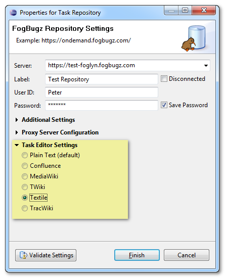
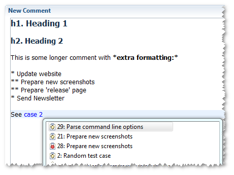
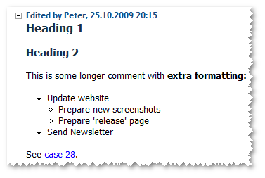
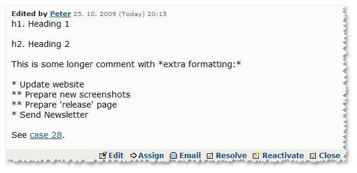

WikiText Integration
WikiText is a Mylyn component that allows you to format text using Wiki syntax. Wiki syntax uses simple formatting markup, which is readable even without being fully formatted. This is example of Textile markup:
*Text in asterisks* is formatted as bold, _text within underscores_ is italics, and this is "a link pointing to Foglyn website":http://www.foglyn.com/.
When formatted, above text would be displayed as:
Text in asterisks is formatted as bold, text within underscores is italics, and this is a link pointing to Foglyn website.
Foglyn takes advantage of WikiText when displaying and for entering FogBugz comments. If you want to use same formatting possibilities,
you need to select you preferred Wiki syntax in Repository Task Properties dialog first.

Now you can use simple formatting markup when entering your comments. Here we use Textile markup, which consists of h1., h2., asterisks around bold text, and asterisks at the beginning of lines to produce a list:

You can see that WikiText even provides you with content assist for text completion. In the screenshot, it suggests cases starting with number 2.
When this comment is sent to the FogBugz, Foglyn will format it as follows:

Comment is still stored as a plain text in the FogBugz server, and is readable even without being formatted. Here is how FogBugz
displays same comment in the web interface:

Related Topics: